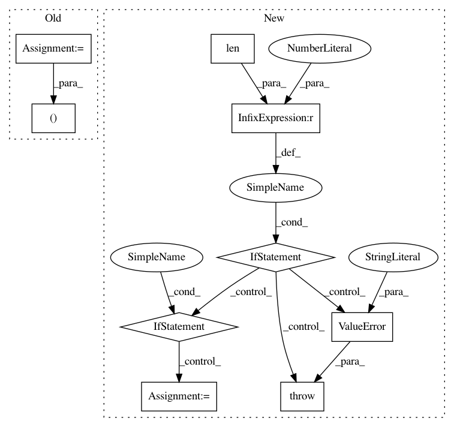

023331ec2a7b0086abfc81eca16c84a1692ee653,keras/layers/convolutional.py,Convolution2D,build,#Convolution2D#Any#,420
Before Change
def build(self, input_shape):
if self.data_format == "channels_first":
stack_size = input_shape[1]
self.W_shape = (self.nb_filter, stack_size, self.nb_row, self.nb_col)
elif self.data_format == "channels_last":
stack_size = input_shape[3]
self.W_shape = (self.nb_row, self.nb_col, stack_size, self.nb_filter)
else:
After Change
self.pointwise_constraint = pointwise_constraint
def build(self, input_shape):
if len(input_shape) < 4:
raise ValueError("Inputs to `SeparableConv2D` should have rank 4. "
"Received input shape:", str(input_shape))
if self.data_format == "channels_first":
channel_axis = 1
else:
channel_axis = 3
if input_shape[channel_axis] is None:
raise ValueError("The channel dimension of the inputs to "
"`SeparableConv2D` "
"should be defined. Found `None`.")
In pattern: SUPERPATTERN
Frequency: 3
Non-data size: 9
Instances
Project Name: keras-team/keras
Commit Name: 023331ec2a7b0086abfc81eca16c84a1692ee653
Time: 2017-02-09
Author: francois.chollet@gmail.com
File Name: keras/layers/convolutional.py
Class Name: Convolution2D
Method Name: build
Project Name: bokeh/bokeh
Commit Name: 5f6b5d3851d0b719f401eafbfc569420405d1ef3
Time: 2016-08-16
Author: canavandl@gmail.com
File Name: bokeh/models/formatters.py
Class Name: FuncTickFormatter
Method Name: from_py_func
Project Name: pymc-devs/pymc3
Commit Name: d15d9ad19021a8a3f26a86fbc6b71838ac37e7d1
Time: 2017-03-30
Author: jonathan.h.friedman@gmail.com
File Name: pymc3/distributions/multivariate.py
Class Name: MvNormal
Method Name: __init__